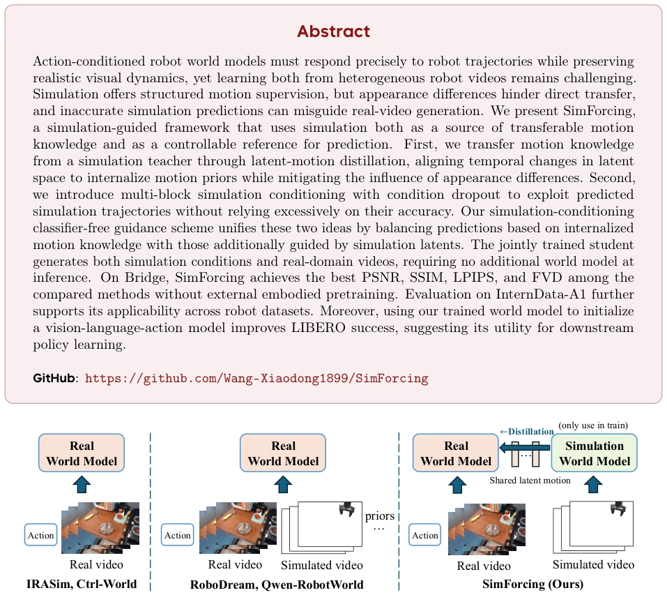
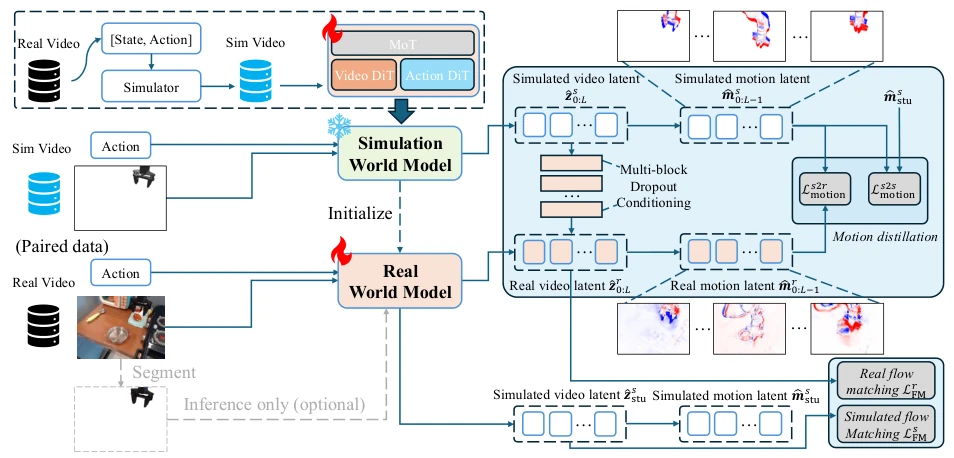
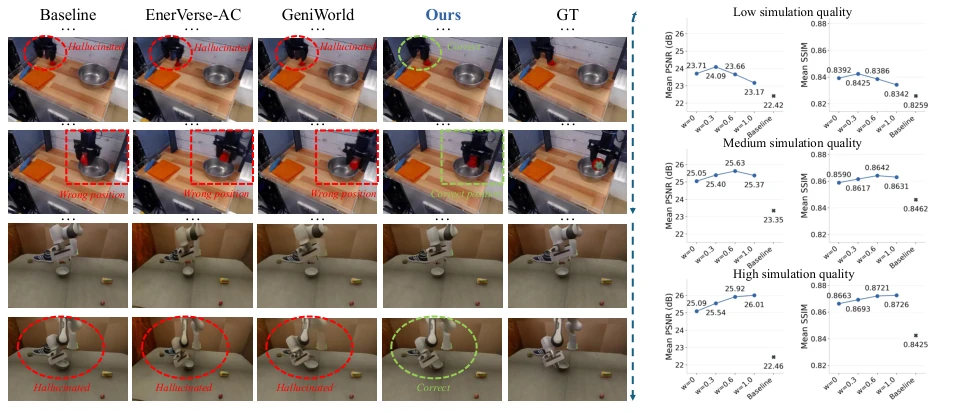
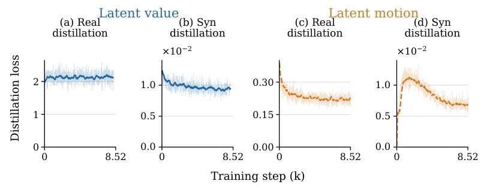

This paper attempts to "feed" simulation data to real-world video models, which sounds like getting simulation data for free. The core of SimForcing is distilling action priors from simulation into the real model, rather than directly aligning pixels. The highlight lies in using latent space motion differences to replace appearance alignment, avoiding the Sim-to-Real visual gap. But there is a drawback: during inference, simulation conditions must be generated first to guide the real video, equivalent to the model assisting itself; if the simulation generation quality is poor, could it mislead? Although the authors claim to use CFG for balance, essentially it still relies on the student model's own simulation capabilities. However, achieving top rankings on Bridge without pre-training is indeed impressive, and the downstream task improvement on LIBERO also proves that world models are not just for "seeing" but can also assist policy learning.
研究动机Motivation
具身智能的世界模型需要精准响应动作轨迹，同时保持视觉真实感。现有方法如 IRASim (Zhu et al., 2025b) 和 Ctrl-World (Guo et al., 2026c) 直接训练真实视频，难以兼顾动作响应和复杂动态。引入显式视觉先验的方法如 RoboDream (Ye et al., 2026a) 和 Qwen-RobotWorld (Zhang et al., 2026a) 需要额外的场景或物体先验构建，成本高且推理需外部渲染。仿真数据虽能提供结构化运动监督，但外观差异大且预测不准，直接迁移会引入误差。因此，如何在不依赖外部渲染的情况下，利用仿真运动先验提升真实视频预测，是关键挑战。
World models for embodied intelligence need to accurately respond to action trajectories while maintaining visual realism. Existing methods such as IRASim (Zhu et al., 2025b) and Ctrl-World (Guo et al., 2026c) directly train on real videos, making it difficult to balance action response and complex dynamics. Methods introducing explicit visual priors such as RoboDream (Ye et al., 2026a) and Qwen-RobotWorld (Zhang et al., 2026a) require additional scene or object prior construction, which is costly and requires external rendering for inference. Although simulation data can provide structured motion supervision, the appearance differences are large and predictions are inaccurate; direct transfer introduces errors. Therefore, how to leverage simulation motion priors to improve real video prediction without relying on external rendering is a key challenge.

Figure 1 Comparison of training paradigms for action-conditioned robot world models. Left: Direct training on real videos and corresponding actions (Zhu et al., 2025b; Guo et al., 2026c). Middle: Training on real videos augmented with explicit visual priors, such as simulated videos, scene priors, and object priors (Zhang et al., 2026a; Ye et al., 2026a). Right: SimForcing learns a simulation world model from synthetic rollouts and distills its motion priors into a real-world model through latent-space motion supervision, without requiring additional scene or object decomposition.
The overall process is divided into three steps: 1. Simulation world model training: Train a Teacher model with MoT architecture on synthetic trajectories to learn action-dependent motion. 2. Sim-to-Real distillation: Freeze Teacher, initialize Student. The core is latent-motion distillation (Latent-motion distillation), aligning latent variable differences between adjacent frames rather than directly matching appearance, internalizing motion priors. 3. Joint training and inference: Introduce multi-block simulation conditioning (Multi-block simulation conditioning) plus Dropout to prevent over-reliance on simulation conditions. Use CFG during inference to balance internal priors and simulation guidance. The student model generates both simulation conditions and real videos simultaneously, requiring no additional models.

Figure 2 Overview of SimForcing. Simulation world model training: A mixture-of-transformers world model learns action-conditioned motion from augmented synthetic rollouts. Sim-to-real distillation: The pretrained model initializes a student and serves as a frozen teacher. Latent-motion distillation internalizes motion priors, while multi-block dropout conditioning provides simulation guidance. Joint training enables the final student to generate both simulation conditions and real videos, with CFG balancing explicit guidance and internalized knowledge at inference.
Evaluate video prediction on Bridge and InternData-A1, and LIBERO for downstream policies. Baselines include Ctrl-World, GeniWorld, Wan2.2, etc. SimForcing is optimal in PSNR, SSIM, LPIPS, FVD in the no-pretraining group, outperforming GeniWorld and with faster inference. Ablation shows motion distillation outperforms value distillation, with CFG weight w=0.6 being optimal. LIBERO task success rate improved from 82.6% to 89.2%, especially on Goal and Long tasks. Proves simulation prior distillation is effective, requires no extra inference overhead, and downstream policy initialization benefits significantly.

Figure 3 Left: Qualitative comparison across methods. The first two rows show examples from Bridge (Walke et al., 2023), and the last two from InternData-A1 (Tian et al., 2026). Our method produces fewer visual hallucinations and more accurate action-conditioned motion. Right: Effect of simulation prediction quality on our method’s real-video predictions on Bridge.

Figure 4 Distillation loss curves for latent value (a–b) and latent motion (c–d) on the real and synthetic branches. Faint curves show logged losses, and bold curves show trailing averages over 250 training steps. The real-branch panels use different vertical scales; the synthetic-branch panels share the same scale.